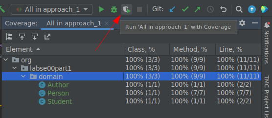

LAB#SE00-1: Maven Clinic
javase
lab
Maven Clinic
Basic understanding of Java programming language is required, as well as some familiarity with Maven or Gradle for managing dependencies and building the project.
Knowledge of algotighms and data structures to implement the required classes.
Create multiple classes in Java (Person, Clinic and MyDate) using the most convenient entity relationship between them.
Test these classes using JUnit.
- Create a new Maven or Gradle project and setting up the project structure
- Modify the project’s
pom.xmlorbuild.gradlefile to import necessary dependencies, including JUnit for testing - Implement the required classes in Java
- Implement two basic patter-designs: singleton and think about factory
- Write JUnit tests to verify that classes work as expected
- Allow the user to input data via the console, rather than using
hard-coded test datain JUnit tests
Approach 1
UML diagram
TODO
Pending to create UML diagram
Classes specifications
Person
Person class
Person.java
package org.labse00part2.domain;
import lombok.*;
@Data
@Getter
@Setter
@AllArgsConstructor
@NoArgsConstructor
public class Person {
private String name;
private int age;
private int height;
private int weight;
private MyDate birthDate;
public void printPerson() {
System.out.println(this.name + ", " + this.age + " years old");
}
public void becomeOlder() {
this.age++;
}
public void becomeOlder(int years) {
this.age += years;
}
public boolean isAdult() {
return this.age >= 18;
}
public double weightIndex() {
double heightInMeters = this.height / 100.0;
return this.weight / (heightInMeters * heightInMeters);
}
public boolean olderThan(Person compared) {
return this.age > compared.getAge();
}
private void setAge() {
// TODO: Use the myDate attribute to set the current age
// Some methods like becomeOlder should be removed
}
@Override
public String toString() {
return this.getName() + ", born in " + this.getBirthDate() + ", " + this.getAge() + " years old, weight index: " + this.weightIndex() + ".";
}
}MyDate
MyDate class
MyDate.java
package org.labse00part2.domain;
import lombok.*;
@Data
@Getter
@Setter
@AllArgsConstructor
@NoArgsConstructor
public class MyDate {
private int day;
private int month;
private int year;
@Override
public String toString() {
return this.getYear() + "/" + this.getMonth() + "/" + this.getDay();
}
public boolean earlierThan(MyDate compared) {
// First, compare years
if (this.getYear() < compared.getYear()) {
return true;
}
// Then, compare months
if (this.getYear() == compared.getYear() && this.getMonth() < compared.getMonth()) {
return true;
}
// Then, compare day
if (this.getYear() == compared.getYear()
&& this.getMonth() == compared.getMonth()
&& this.getDay() < compared.getDay()){
return true;
}
return false;
}
}Clinic
Clinic class
Clinic.java
package org.labse00part2.domain;
import lombok.*;
import java.util.ArrayList;
import java.util.List;
@Data
@Getter
@Setter
@AllArgsConstructor
@NoArgsConstructor
public class Clinic {
private String name;
private double lowestWeightIndex;
private List<Person> members;
@Builder
public Clinic(String name, double lowestWeightIndex) {
this.name = name;
this.lowestWeightIndex = lowestWeightIndex;
this.members = new ArrayList<>();
}
@Builder
public Clinic(String name, List<Person> members) {
this.name = name;
this.members = members;
// Once initialized the members, set the lowest Weight Index
this.setLowestWeightIndex();
}
public void addMember(Person member) {
this.getMembers().add(member);
// Remember to update the lowestWeightIndex each time a new member is added
if (member.weightIndex() < this.getLowestWeightIndex()) {
this.lowestWeightIndex = member.weightIndex();
}
this.setLowestWeightIndex();
}
public boolean hasMember(Person member) {
return this.getMembers().contains(member);
}
public Person personWithHighestWeightIndex() {
Person highestWeightIndexMember = null;
for (Person member : this.getMembers()) {
if (highestWeightIndexMember == null || member.weightIndex() > highestWeightIndexMember.weightIndex()) {
highestWeightIndexMember = member;
}
}
return highestWeightIndexMember;
}
public void setLowestWeightIndex() {
for (Person member : this.getMembers()) {
if (this.getLowestWeightIndex() == 0 || member.weightIndex() < this.getLowestWeightIndex()) {
this.lowestWeightIndex = member.weightIndex();
}
}
}
public String toString() {
StringBuilder membersBuilder = new StringBuilder("");
for (Person member : this.getMembers()) {
membersBuilder.append(member + "\n");
}
return "Clinic: " + this.getName() + "\n"
+ "Lowest Weight Index: " + this.getLowestWeightIndex() + "\n"
+ "Members: " + membersBuilder;
}
}Tests
TODO
Missing tests for Person and MyDate classes
Use the Code Coverage feature!
When launching tests, do it with Code Coverage to know how much of your code is being tested. Just click on the button next to the Run one when executing a batch of tests or right-click on the Play button next to each test: 